Citation: Wang, G., Alais, D., Blake, R. et al. CFS-crafter: An open-source tool for creating and analyzing images for continuous flash suppression experiments. Behav Res (2022). https://doi.org/10.3758/s13428-022-01903-7
Homepage
CFS Mask Creation
Creation allows the user to create various types of
CFS-Crafter masks. The created CFS-Crafter masks and their basic information can be
viewed & saved in the
preview interface.
1. Mask Selection
CFS-Crafter allows the user to create CFS masks with a variety of
different features. When choosing the type of masks, the user should select the options in a left-to-right
order.
1.1. Patterned Element:
Patterned Element Mask consists of Mondrian patterns with certain
types of elements ranging from simple geometrics such as circles or
squares, to more complicated elements such as objects traced from an
image. Here are the details of different types of patterns that are available:
1.1.1. Geometric Shape
The first type of pattern is geometric shape, which means the Mondrian
pattern consists of simple geometric shapes of various features,
which include:
1.1.1.1. Pattern Shape
Pattern Shape determines the shape of each element in the Mondrian masks,
which can be circle, square or diamond.
The size of the patterns is proportional to the dimension of the
stimuli. There are 5 different levels for patch size. For the
circle patch, the radius ranges from 8% to 18% of the maximum
dimension of the stimuli. The sizes of square and
diamond patches are set such that they have roughly the same
area as the circle patches.
 Fig.1a - Circle Mondrian Pattern
Fig.1a - Circle Mondrian Pattern
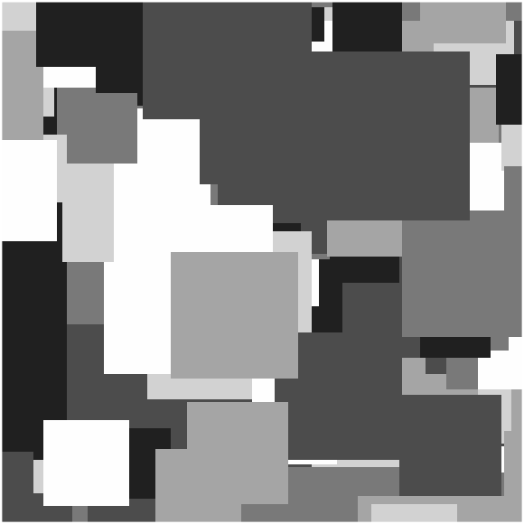
Fig.1b - Square Mondrian Pattern
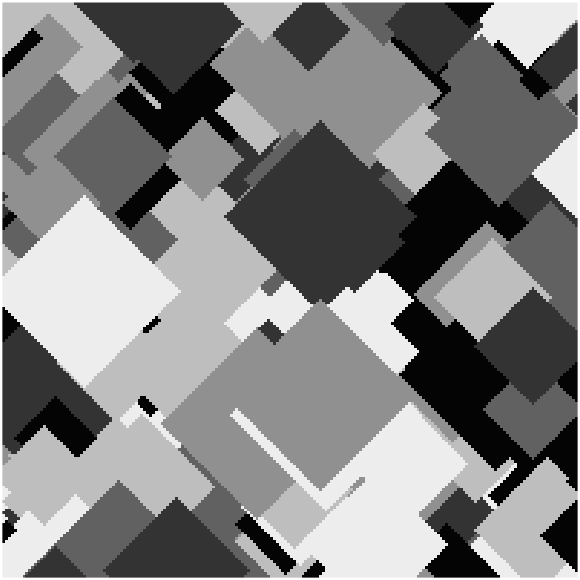
Fig.1c - Diamond Mondrian Pattern
1.1.1.2. Pattern Fill
The fill of the pattern can be either
solid colours or
noise patterns.
Fig.2a - Circle Mondrian Pattern with Solid Fill
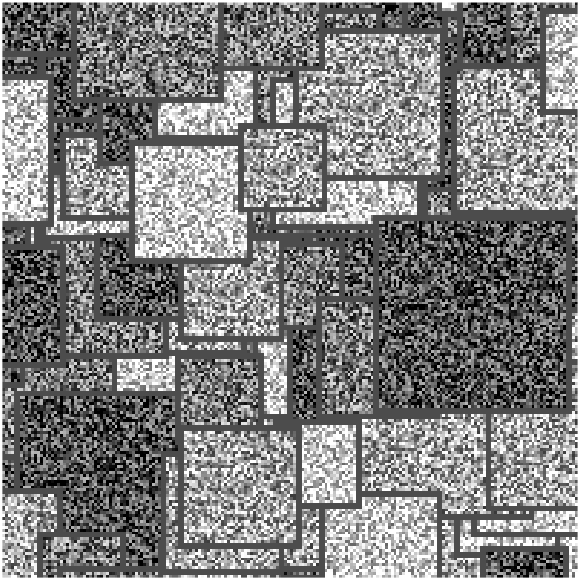
Fig.2b - Square Mondrian Pattern with White Noise Fill
1.1.1.3. Pattern Colour
The Solid filled pattern can be either in
grayscale or in RGB colour.
For the grayscale filled pattern, there are 6 different luminance
levels (0; 0.2; 0.4; 0.6; 0.8; 1.0) used before RMS contrast & mean
luminance adjustment.
For RGB colour filled patterns, there are 5 different
colours ([0 0 0], [1 0 0], [0 1 0], [0 0 1], and [1 1 0]) used before RMS
contrast & mean luminance adjustment.
Fig.3a - Grayscale Mondrian Pattern
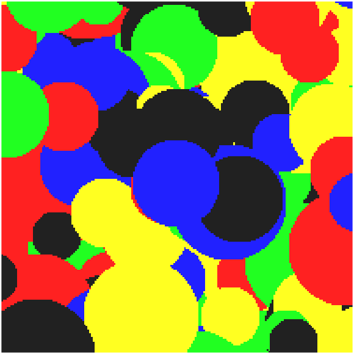
Fig.3b - Rgb Colored Mondrian Pattern
1.1.1.4. Pattern Noise Type
Noise filled patterns will be grayscaled White Noise or Pink Noise.
Fig.4a - White Noise Filled Pattern
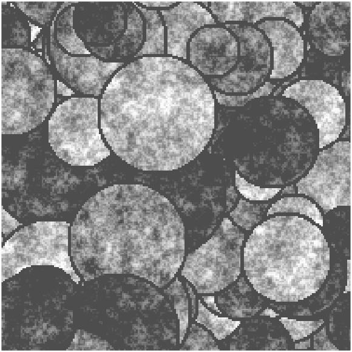
Fig.4b - Pink Noise Filled Pattern
1.1.2: Traced Items
The user can also trace up to 5 different faces/objects and create Mondrian
patterns from these traced items. CFS-Crafter allows users to trace up to 5 different objects/faces to
create a
stimulus sequence. Click here for help on item tracing.
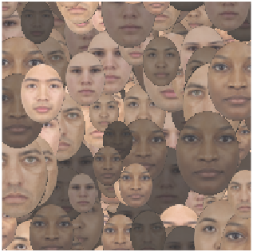
Fig.5a - Traced Face Mondrian Pattern
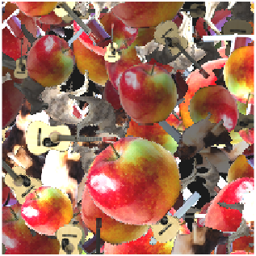
Fig.5b - Traced Object Mondrian Pattern
1.2. Noise Masks
These masks consist of a dynamic sequence of white noise or pink noise.
1.2.1. White Noise
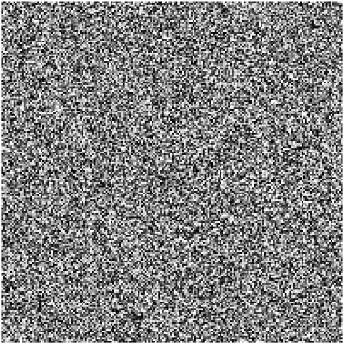
Fig.6a - White Noise Mask
White Noise consists of random intensities between 0 and 1 across all pixels before RMS contrast &
mean luminance
adjustments, which leads to roughly constant power spectral density (PSD) across all frequencies.
1.2.2. Pink Noise
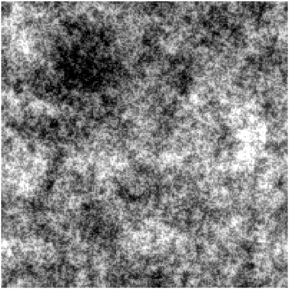
Fig.6b - Pink Noise Mask
Pink Noise has a PSD inversely proportional to the frequency, which closely resembles
a
natural scene.
2. Mask Creation Parameters
Users need to enter the parameters for the mask they want to create.
2.1. Mask Dimensions:
Width & height in pixels, the size in
the degree of visual angle will be calculated & shown in the preview
interface.
2.2. Mask Update Rate & Mask Sequence Duration:
The Mask Update Rate is the rate at which the images are updated in the
stimulus sequence.
Notice that Mask Update Rate is not the same as Temporal Frequency, even though they are both
in the unit of Hertz. Click here for details on Temporal
Frequency and means to manipulate it.
Mask Sequence Duration is the duration of the created CFS mask stimulus with unit of second. Notice
the duration input here should be relatively short (a few seconds at most), since the increase in duration & frames
will drastically increase the size of the stimuli array & the processing speed. If the experimental design requires
a long suppression time, consider looping through one or multiple short sequences created by CFS-Crafter.
2.3. RMS Contrast & Mean Luminance:
The Root-Mean-Square (RMS) Contrast of an image is the average standard
deviation of the intensity of each pixel. For RGB-colored stimuli, each frame
is first converted to grayscale and then the RMS contrast is
calculated. Here the RMS contrast entered is the target average RMS
contrast for the entire stimulus sequence.
Similarly, the mean luminance of an image is the average value of intensity across all the
pixels. Here the mean luminance is the target average luminance of
the created stimulus sequence.
2.2.1. Image Clipping
The figure below shows cross-sections of the same Mondrian patterned masks with different levels of RMS contrast
and
mean luminance setting. As seen here, when the target RMS contrast is large, or when the target mean
luminance is very extreme, or both at the same time, part of the pixels will have intensity fall outside of the
[0,1] range, in
order
to present the stimuli, these pixels must have their intensity clipped back to 0 or 1. This process is called
clipping of the image. Clipping of the image will result in the actual RMS Contrast & luminance
of the stimuli being
different
from the user's settings.
RMS Contrast Adjustment & Clipping
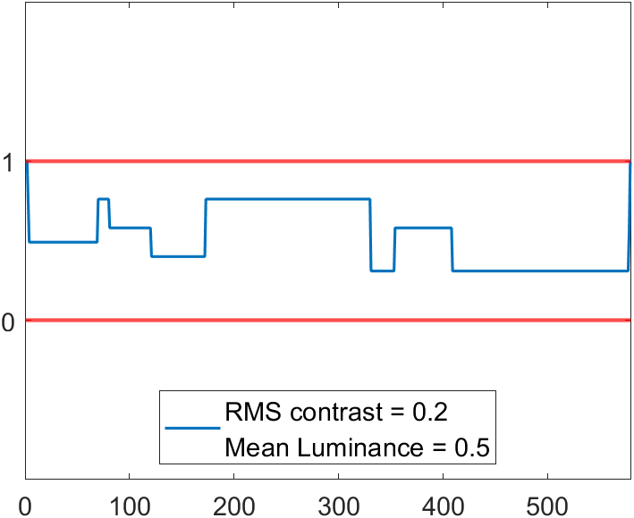
Fig.7a - Original
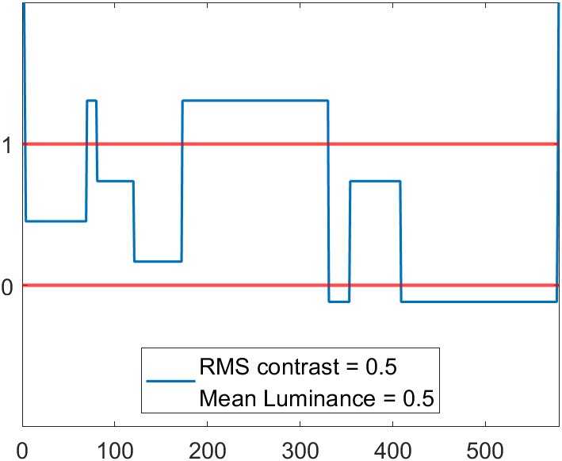
Fig.7b - After RMS contrast adjustment, before clipping
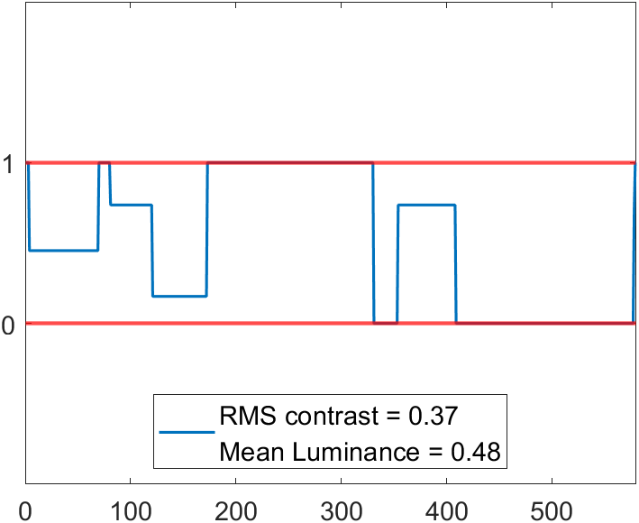
Fig.7c - After RMS contrast adjustment & clipping
Mean Luminance Adjustment & Clipping
Fig.8a - Original
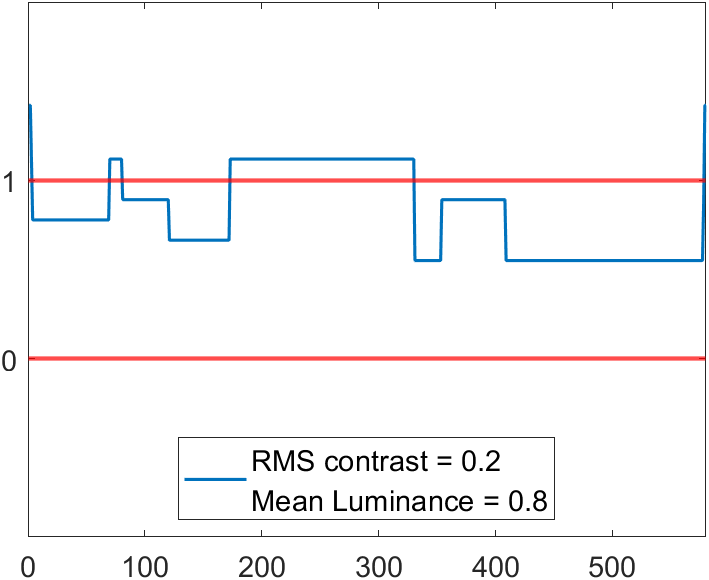
Fig.8b - After mean luminance adjustment, before clipping
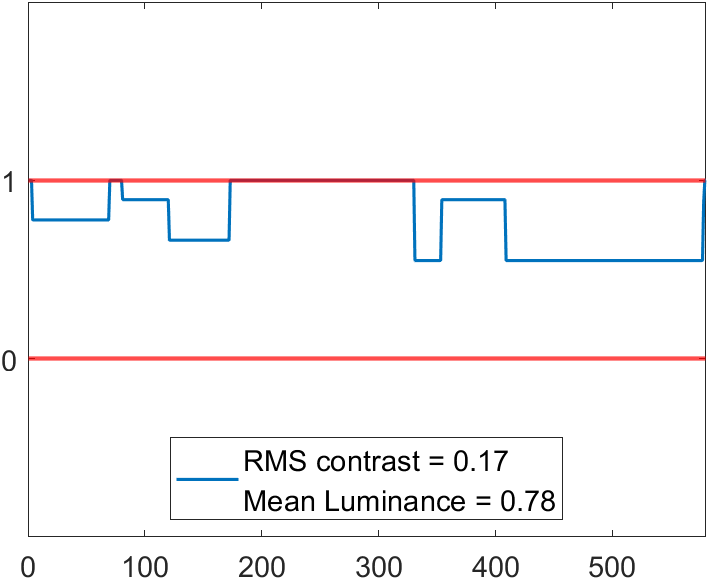
Fig.8c - After mean luminance adjustment & clipping